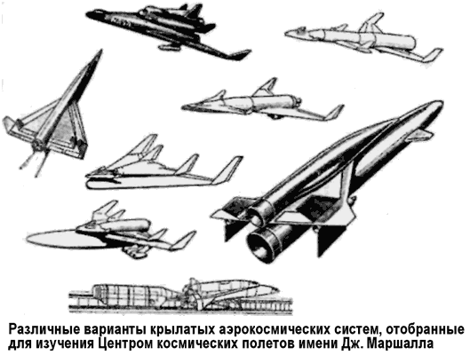

Крылатые космические системы «Saturn»
В начале 60-х наиболее перспективной ракетой-носителем в США считалась ракета «Сатурн» («Saturn»), разработкой и совершенствованием которой занимался Центр космических полетов имени Дж. Маршалла в Хантсвилле (штат Алабама), возглавляемый Вернером фон Брауном.
Именно специалистам этого центра руководство НАСА поручило провести исследование крылатой космической системы многоразового использования на базе модифицированного носителя «Сатурн», предназначенной для вывода на околоземную орбиту полезной нагрузки от 50 до 100 тонн.
Рассматривалась модификация системы «Сатурн-5» («Saturn C–V»), состоявшая в том, что к ступеням «S-IC» (длина — 42,1 метра, диаметр — 10,1 метра, масса — 2286 тонн, тяга — 3947 тонн) и «S-II» (длина — 24,8 метра, диаметр — 10,1 метра, масса — 490,8 тонны, тяга — 526,8 тонны) добавлялись крылья площадью 92,9 и 46,9 м2, обеспечивающие вход в атмосферу и спасение ступеней горизонтальным приземлением.

Турбореактивные двигатели, расположенные под крылом первой ступени, обеспечивают крейсерский полет на дозвуковой скорости к месту посадки. Посадку на Землю второй ступени предполагалось осуществить планирующим спуском по типу посадки ракетоплана «Х-15».
Каждая ступень должна была пилотироваться летчиком, хотя не исключался и вариант беспилотной посадки.
Полет осуществляется по следующей программе. Двигатели первой ступени прекращают работу через 2,5 минуты на расстоянии 83 километров от старта на высоте 61 километр при числе Маха, равном 8. Первая ступень после отделения от второй ступени, двигаясь по инерции, достигает высоты примерно 112 километров, а вторая ступень будет продолжать движение по заданной траектории.
Когда первая ступень опустится на высоту примерно 38 километров, летчик, управляя аэродинамическими рулями, изменит курс на 180°. Вход в атмосферу и торможение продолжатся около 11 минут; в это время первая ступень будет в 650 километрах от места старта. Полет к месту посадки осуществляется на турбореактивных двигателях. Примерно через час полета первая ступень совершит посадку при скорости 295–305 км/ч.
Для многократно используемой второй ступени при входе в атмосферу температура в критической точке полнота торможения потока может быть порядка 1100°. Для защиты конструкции от нагрева группа из Центра имени Дж. Маршалла рекомендовала материалы, наносимые пульверизацией или обмазкой и разработанные для покрытия космических кораблей «Джемини» («Gemini») и «Аполлон») («Apollo»). Аэродинамический нагрев первой ступени будет? значительно меньше; температура обшивки будет как у «Х-15» — от 260–540°.
Предполагалось, что летные характеристики многократно используемых крылатых ступеней системы «Сатурн» будут мало отличаться от аналогичных характеристик ракетоплана «Х-15».